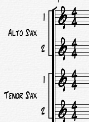

There are several ways to connect Group Names for groups of instruments.
Using the Barlines palette you can drag across a group of staves
The following describes each of the tools in the Staves palette:
- Group With Bracket. Select the bracket ([) to group independent staves into a loose grouping (for example, bracketing the four staves of a string quartet).
- Group As System. Select the system line (|) to group all the staves in a system.
- Group With Brace. Select the brace ({) to group the different staves representing a single musical instrument (like the two staves of a piano score).
In addition Overture provides and additional feature call Group Names. Group names are used to connect groups of instruments using a single name.

To enter a group name:
- Right click on a staff just to the left of it's clef.
- Choose Create group name from the popup-menu.
- Enter the name and abbreviation of the group, the start and ending track, and check the box if you wnat the abbreviation name displayed on systems other than the first.
- You can also move the position using the X and Y numeric fields.
When you enter a group name, Overture does the following for each track:
- The normal track name is hidden.
- The track's group name is displayed to the right of the last group connector.
This is set in the Track inspector.
- The Group name is displayed to the left of the the track group names.
- The Group names use the Track justification setting set in the Score Layout Panel.